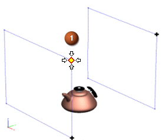

Identify the location of the first camera point
-
In the Camera group, make sure that the Lock Target Position
 check box is selected.
check box is selected.
This setting ensures that the target position will not move as you move the camera.
-
In the Camera group, click Specify Camera Orientation
 .
.
-
In the staging window in the graphics area, select the first camera point (1).

Note that actions taken in the camera staging view are reflected in the insert window and vice versa.
Use whatever display makes selection easier.
-
In the Custom Zoom group, set Magnification to a value of .2, and then click OK.
The new camera is defined and is referenced in the Part Navigator.
-
Fit the view and then update the camera in the Part Navigator.